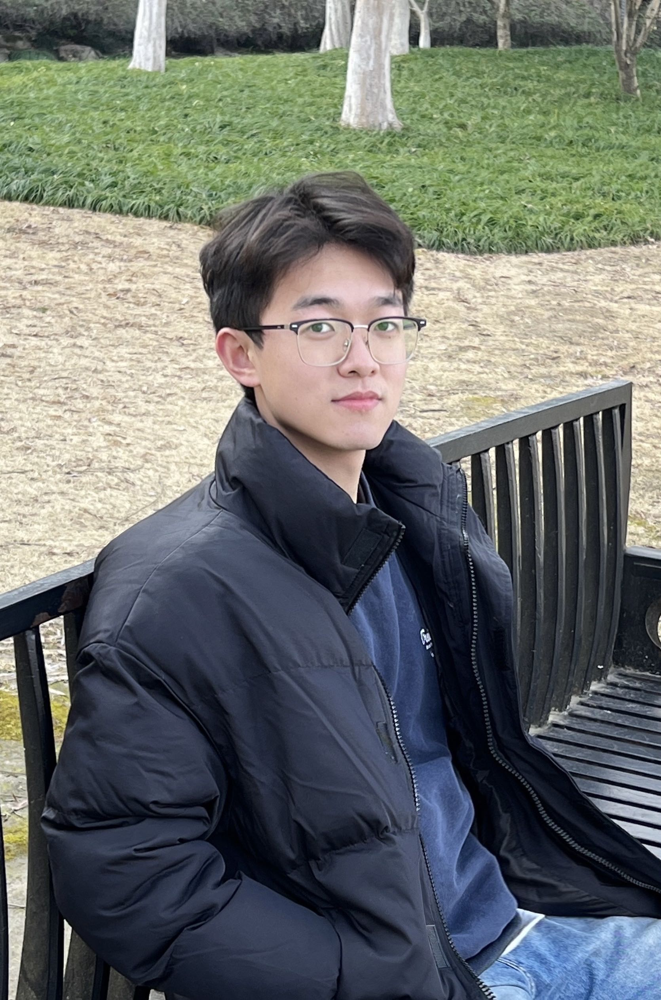

Jingwei Jiang 蒋景伟Master Student
Room 218, Mengminwei Building
|
 |

Biography
I am currently a master's student in the The CAD & CG State Key Lab, College of Computer Science and Technology, Zhejiang University.
My research interest lies in computer vision and deep learning, including scene understanding, depth estimation, 3D Detection.
News
- [09/2022] I received the Master offer from ZJU and would pursue the Master degree since August 2023.
- [06/2023] I have received a bachelor's degree from Zhejiang University.
Competitions
-
Ranked sixth globally in the occupancy prediction task at CVPR 2023 workshop. May 2023 -
Rank Top 30, The 5th UBIQUANT Quantilization & Data Mining Challenge, Oct 2022 -
Top 3.6% globally in kaggle's House Prices-Advanced Regression Techniques competition, May 2022 -
First prize of Zhejiang Province "Challenge Cup" College Students Extracurricular academic Science and technology Works Competition, May 2021
Honors & Awards
-
Received the Provincial Excellent Graduate Award in Zhejiang Province. 2023 -
First-class Scholarship of Zhejiang University, 2019-2020,2020-2021,2021-2022 -
School-level outstanding Youth League cadres of Zhejiang University, 2019-2020,2020-2021,2021-2022
Miscellaneous
- Girlfriend: Linqi Wang(Zhejiang University, Winner of the National Award Scholarship)
- Academic Countdown
- Affections: Music, Table tennis, Texas Hold 'em
© Jingwei Jiang | Last updated: Jan 2023